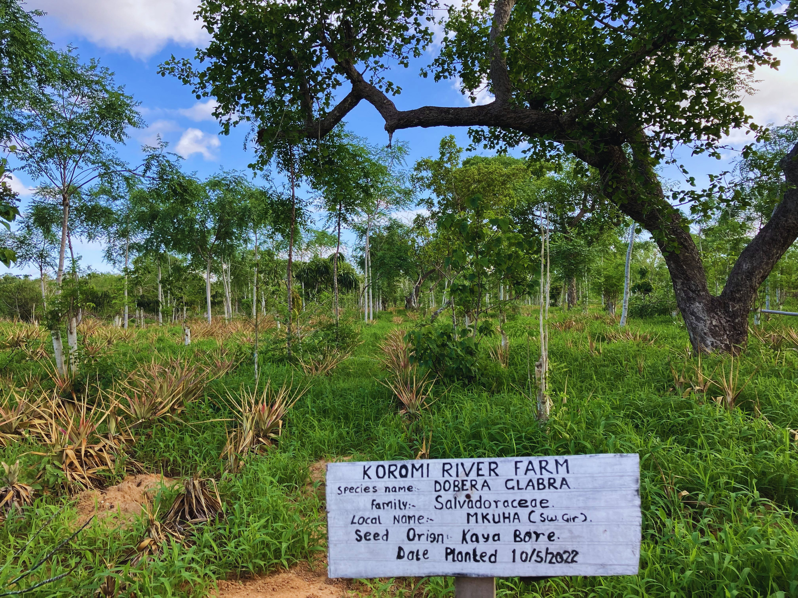
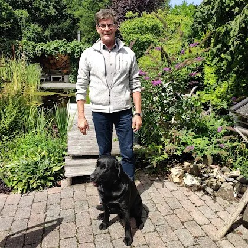

About Us
Our Story
Founded in 2019, our journey began with the development of a 200-hectare agroforestry project in Koromi, Kilifi County. Over time, the project evolved into a focused effort on forestry, reforestation, and sustainable land restoration.
In 2022, we expanded with a 4-hectare nursery and experimental farm in Kakuyuni, producing indigenous and fruit trees while supporting ongoing research and field planting.
In 2024, our nursery was selected under JICA’s SFS-CORECC program to produce improved Melia volkensii seedlings. This partnership enabled demonstration plots, research trials, and water harvesting systems.
In 2026, we launched a large-scale nursery in Mtwapa with a 7,500m² shadehouse capable of producing millions of seedlings annually, currently focused on moringa production for a carbon project.
Our Work in the Field
A glimpse into our nurseries, forestry sites, and restoration work.



200+
Hectares
7,500m²
Shadehouse Capacity
500,000
Seedlings per Year
3
Core Systems
Our Approach
Commercial Forestry
Focused on Melia volkensii as a high-value timber species forming the economic backbone of our model.
Ecosystem Restoration
Enrichment planting and assisted natural regeneration to restore biodiversity and ecosystem health.
Agroforestry
Integrating drought-resistant crops like moringa and cashew with forestry systems for resilience and productivity.
Our Team
Crescendo.green is led by practitioners with deep operational experience:
Core Leadership

Bob van der Bijl
CEO, operations and project development
Affiliates

Jaap van den Beukel
Propagation and nursery systems
Albert Vrolijk
Nursery establishment and management
Peter
Field support and operations
Marc Parren
Forestry and assisted natural regeneration
Operations Team
Jilo Robert
Foreman
Catherine
Supervisor
Our Vision
To build scalable, climate-smart forestry systems that restore ecosystems, generate sustainable income, and contribute to global carbon reduction.